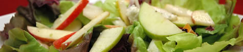

Cardápio
Aperitivos

- Sopa de tomate assada - servida com croutons de queijo de cabra e purê de manjericão.
- Salada de Verão - manteiga orgânica de alface com maçãs, laranjas de sangue e gorgonzola, misturada com vinagrete de framboesa.
- Fondue de Brie, queijo de cabra e Gruyere - servido com maçãs verdes e alho crostini. Bom para compartilhar.
- Flatbread Crispy - coberto com asiago, prosciutto e rocket.
- Ahi Tatar de barbatana amarela - servido em uma cama de repolho picado com gosto de abacate e um molho de pimenta verde.
Entradas

- Vieiras enroladas em pancetta - regadas com purê de estragão. Servido com couve-flor assada gratinada em um molho gruyere picante.
- Cajun Seafood Bouillabaisse - com lagosta, vieiras, peixe-gato, caranguejo e mexilhões. Servido com pão de milho ao estilo do sul e manteiga de mel.
- Macarrão Cavatappi com molho picante de grão de bico - servido com berinjela grelhada, azeitonas verdes e tomates secos. Coberto com feta mediterrâneo.
- Costeleta de porco com corte duplo e sálvia - coberto com um guisado de cogumelos e pancetta grossa. Servido com bolos de milho griddle.
- Lasanha à bolonhesa - massas caseiras entre camadas de carne de porco cozida lentamente e molho à bolonhesa de carne. Servido com espargos orgânicos.
- Kobe Beef Tartar - servido com tempura de abóbora squash com molho de wasabi creme.
Sobremesas

- Tiramissu - sobremesa italiana fresca e refrescante.
- Peras cozidas com molho de caramelo - coberto com sorvete caseiro de baunilha-feijão.
- Pumpkin Creme Brulee - servido com nossos famosos biscoitos de gengibre.
- Cheesecake de Nova York - cheesecake cremoso tradicional coberto com molho de chocolate escuro e morangos frescos.
- Sacher Torte - três camadas de bolo de chocolate escuro, recheado com geléia de damasco caseira, coberto por um esmalte de chocolate cremoso e rico.
Especial de sexta-feira do dia

- Alabote-do-alasca com um molho de Loire Valley rico de Beurre Blanc - servido com batatas roxas e os haricot verts roxos triturados.
- Recomendado especial: '98 Passi Emilio Vineyards Sauvignon Blanc